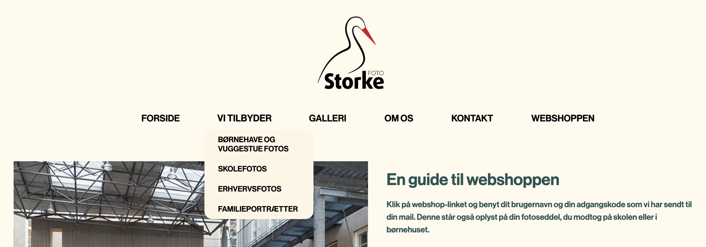
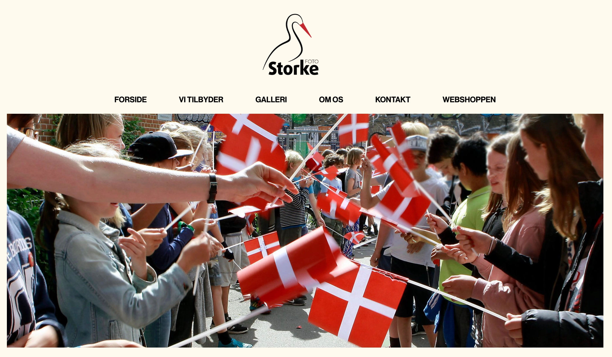

T05 Grundlæggende indhold
Tema 5 bestod af to dele. Indledningsvist blev vi inddelt i teams af fire. I del et skulle vi lave en video om et menneske med en passion. I anden del skulle vi lave en virksomhedssite, hvor vi redesignede et firmas hjemmeside.
[passionssite]
I den første del af dette tema var vi inddelt i par, vi skulle sammen finde en passioneret person. Vi skulle så lave et one-minute-wonder interview af denne person. Min partner og jeg besluttede hurtigt at vi ville interview Pernille Grib, som er leder for sprutteambassadørerne i Danmark.
Vi planlagde vores storyline, interviewspørgsmål og forskellige b-rolls som vi ønskede at optage hjemme hos Pernille. Selve interviewet gik rigtig godt, og vi havde en del gode b-rolls vi kunne bruge i vores video. Da vi var færdige med at filme, skulle vi klippe videoen selv i premier pro og styre lyd/støj i audition.
Anden fase af denne opgave var at lave et passionssite. Vi fik udleveret wireframes, så opsætningen var forudbestemt. Vi skulle selv skrive indhold til passionssitet, som passede til vores person og deres passion. Vi lærte hvordan man embedede videoer både gennem HTML tag video og iframe. Samt hvordan man brugte poster, til at få et forsidebillede på ens video tag.Passionssitet skulle indholde en Herosektion. Den lavede vi i After Effects, og importerede den som en Lottiefile. Det var første gang vi blev introduceret til After Effects, og det var er rigtig fedt, og et værktøj jeg kommer til at bruge meget fremover. Nedenstående kan i se min Lottiefile:
Jeg fik god feedback både for min video og særligt for min Lottiefile. Så all in all blev jeg meget tilfreds med hjemmesiden. Det var også et fedt budskab at få spredt, og Pernille er bare en helt igennem ildsjæl.
[virksomhedssite]
I anden del af dette tema, skulle vi redesigne en allerede eksisterende hjemmeside. Det skulle vi gøre hele gruppen, altså fire mennesker. Det var første gang vi skulle arbejde sammen i en gruppe, så det skulle man lige finde ud af hvordan vi fordelte arbejdsopgaver og generelt udarbejdede det her projekt. Til at hjælpe med lige netop dette anvendte vi et SCRUM board, som vi lavede inde i Trello. Det var et virkelig godt værktøj til at skabe overblik over arbejdsopgaverne, og hvem der varetog hvad.
Vi valgte at redesigne Storke fotos’ hjemmeside. Et fotofirma, lokaliseret i Allerød, som specialiserer sig i børnehave- og skolefotos. Det var en meget spændede og udfordrende opgave, da deres eksisterende hjemmeside virkelig trængte til en kærlig hånd. Generelt var hjemmesiden enormt rodet og svær at navigere. Der var ingen konsistens i typografi og opsætningen heraf. Det var meget modsigende, da hjemmesiden skulle sælge lækre og æstetiske fotos, men de blev druknet af dårlig layout, typografi og farver.
Vi lavede en designanalyse og test på hjemmesiden, som kun bekræftede os i alt det vi allerede havde forstillet og tænkt på forhånd. Så testene og analysen var startskuddet til den redesignede løsning. Her var det vigtigt for at at det var rolige farver og et luftigt layout, som lod billederne være i fokus.
Til venstre ses et styletile over den gamle hjemmeside og til venstre et for vores redesign. Vi udarbejdede både styletile og hifi prototype i Figma på baggrund af feedback fra test, og ud fra informationer og nøgleord fra vores interview med Rikke Høeg, ejer af Storke fotos.
[kodet site]
Vi lavede en ny sitemap, wireframes og layoutdiagrammer for den redesignede version, og startede på at kode ud fra dem. I denne fase initierede vi et Git repository i Github. Dette gjorde det muligt at kode alle fire og så “push” og “pull” de nye ændringer ned på hinandens enheder. Det var rigtig smart og effektivt - når det virkede.
Vi skulle arbejde med et nyt tag i HTML denne gang, nemlig en form, og dens tilhørende HTML tags. Desuden lavede vi igen en herosektion (Lottiefile) til forsiden, og vi redesignede headeren så den var lettere at navigere i for brugeren. Dette gjorde i form af en dropdown menu. Desuden brugte vi variabler, som shortcuts til en kortere kode, samt en nemmere måde at skrive farver, marginer eller andre konstanter ind i koden.
[endeligt design]
Jeg synes at vores redesignede site er blevet mere overskueligt, professionelt og brugervenligt. Det er opnået ved hjælp af ens opsætning og layout på siderne, farver som komplimenterer hinanden, og et overskueligt grid som gør det nemt for kunden at navigere i. Særligt de rolige farver er vi blevet tilfredse med, og vi synes de virker rigtig godt og skaber en balance mellem det personlige og professionelle. Desuden har vi ryddet op i headeren, og lavet en drop down menu til de forskellige typer fotografi som tilbydes. Vi har altså lavet menuen mere tilgængelig, dette kunne vi tydeligt se i resultaterne fra vores brugerrejser i tænke-højt-testen.
Vi er overordnet meget tilfredse med stilen af sitet, og synes vi er nået i mål med alle de ting og de elementer vi ønskede at forbedre.